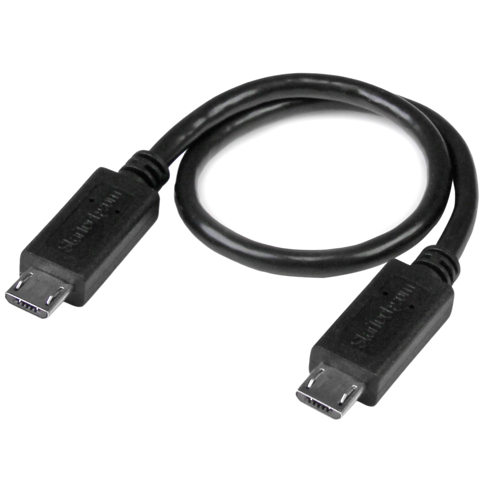
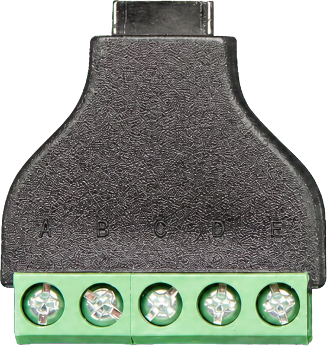
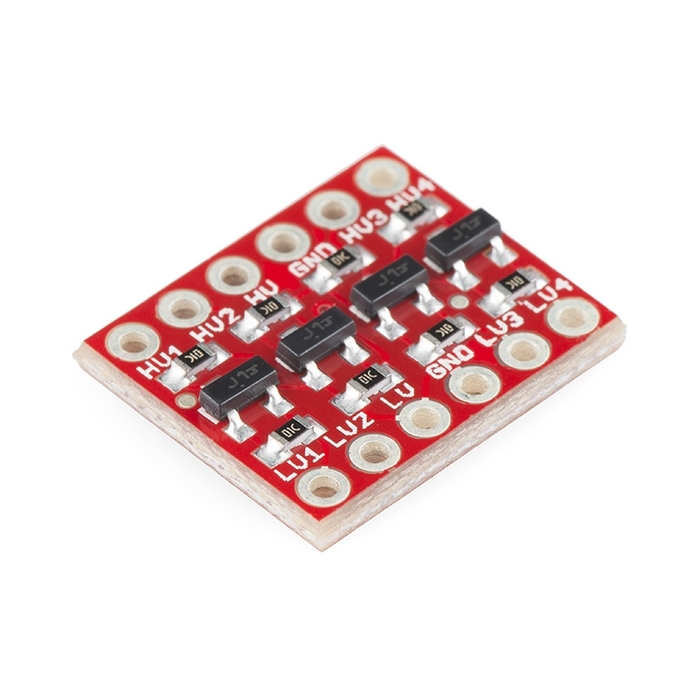
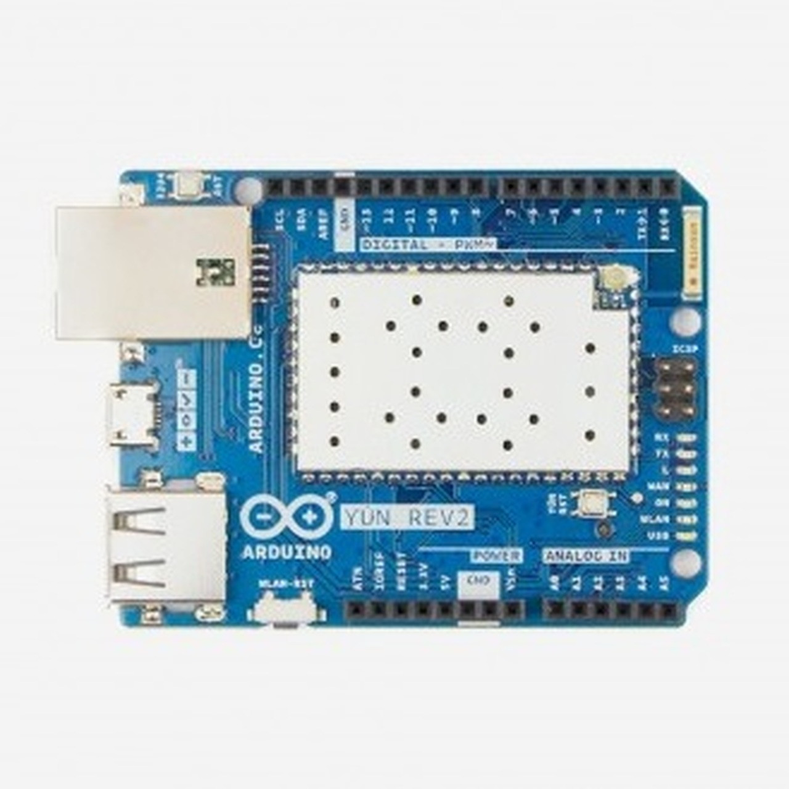
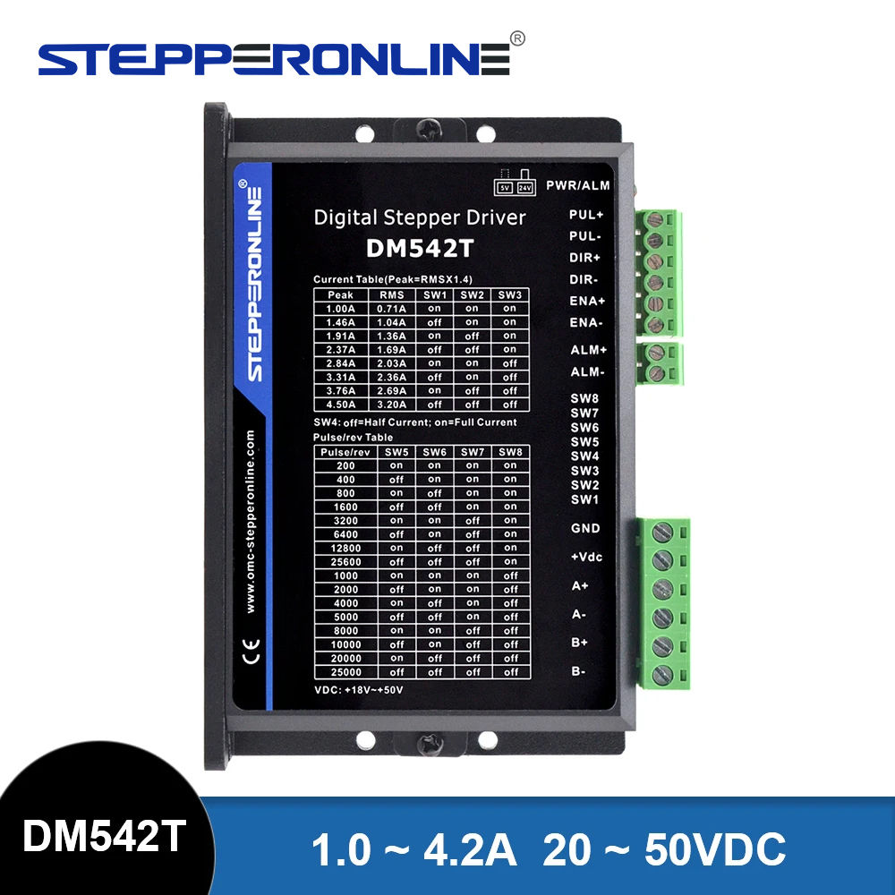

ARDUINO YÚN CLOSED-LOOP AXIS
PHYSICAL WIRING LAYOUT · ONE iGAGING ABSOLUTEDRO PLUS AXIS
KEY
3.3V
5V
GND
CLOCK
DATA
STEP
DIR
ENA
SWITCH
24V
MOTOR






iGAGING ABSOLUTEDRO PLUSMicro-B data port on readout
MICRO-B MALE ↔ MALE CABLE5 conductors
MICRO-B BREAKOUTAdafruit 3970 · cable plugs into top
LOGIC LEVEL SHIFTERSparkFun BOB-12009 · LV 3.3 V · HV 5 V
ARDUINO YÚN REV2
DM542T5 V logic · common-anode inputs
TERMINAL LABELS
ADAPTER A = 3.3V · B = CLOCK · C = DATA · D + E = GND
LOW SIDE B → LV1 · C → LV2 · A → LV · D + E → GND
HIGH SIDE HV1 → YÚN D10 · HV2 → YÚN D11 · HV → 5V · GND → GND
DRIVER D3 → PUL− · D2 → DIR− · D9 → ENA− · 5V → PUL+/DIR+/ENA+
D11
D10
D9
D8
D6
D5
D4
D3
D2
3V3
5V
GND
EXISTING SWITCH / LIMIT HARNESS
D4 RUN — contact to GND
D5 DIRECTION — contact to GND
D6 POSITIVE LIMIT — contact to GND
D8 NEGATIVE LIMIT — contact to GND
GND COMMON RETURN
EXISTING FIELD WIRING — KEEP AS INSTALLED
24 VDC SUPPLY
LN176S-E06008-210-S-200 ACTUATOR · A+/A−/B+/B− UNCHANGED
Terminal mapping: TouchDRO AbsoluteDRO Plus · Adafruit 3970 · SparkFun BOB-12009 · DM542T V4.0